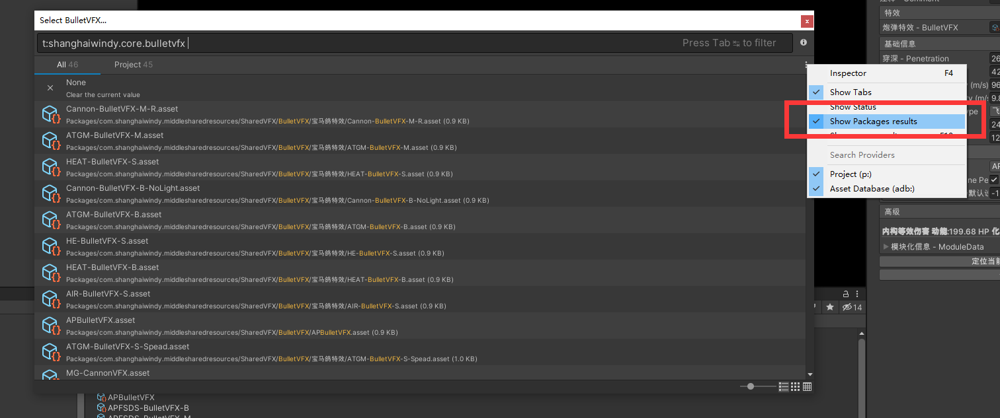
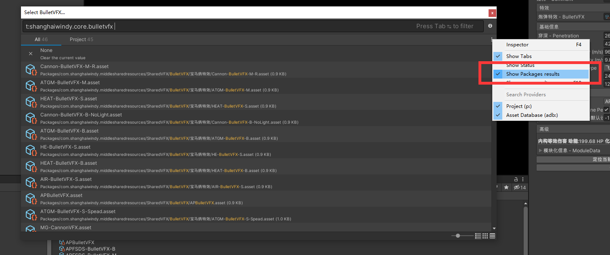

0-3. Shared Resources 共享资源文件夹
Introduction 概述
To simplify resources update, the vfx ,fmod config and hitbox preset has been moved to shared resources. Old project need to delete them and add new package to the project. 为了简化资源的更新流程。特效，fmod 配置，以及伤害模型的预设已经被移到共享资源。旧的工程需要从项目中移除他们，并安装新的包。
1. Download Latest Project 下载最新工程
1. GetStarted 项目初始化 Download the latest project，you can refer this document. 下载最新的工程。
2. Open Your Old Project 打开你的旧工程
**Backup your project **then delete the following folders
备份你的工程，然后删除以下文件夹
UnityProject\Assets\Res\VFX
UnityProject\Assets\Res\Vehicles\Data\FMod
UnityProject\Assets\Res\Vehicles\Ground\Data\VFX
UnityProject\Assets\Res\InternalDamage\Preset
And delete these four files
以及删除这四个文件

3. Add new package 添加新包
Add the following package from local. It is located in where you download in Step.1. 添加以下本地 Package 。 他位于本地，且路径为你在步骤.1 你下载的工程路径中。

When package is showed, it means upgrade is finished. 显示如下文字，就说明升级完成
4. Switch picker 切换文件选择器
The classic picker do not support pick files from package. You need to toggle to new picker.
默认的文件选择器并不支持显示包内的资源，你需要切换到最新的 picker。

 
When using the picker，toggle on Show Package results
在使用 Picker 的时候，勾选 Show Package results

When using the picker，toggle on Show Package results
在使用 Picker 的时候，勾选 Show Package results